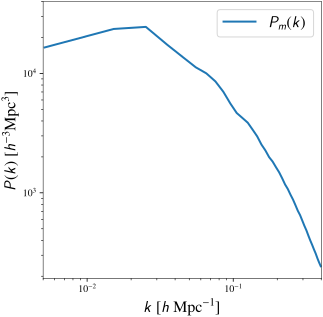
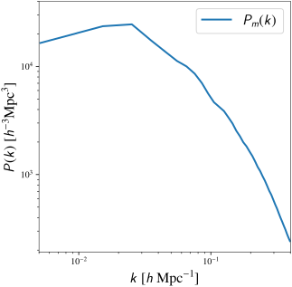

Bayesian inference
with physics informed priors
from simulations
Journée des thèses, IAP, 29.03.2024
Simon Ding in collaboration with Ludvig Doeser
supervised by Guilhem Lavaux (IAP) & Jens Jasche (Stockholm University)
Bayesian inference
with physics informed priors
from simulations
Bayesian inference
with physics informed priors
from simulations
Bayesian inference
with physics informed priors
from simulations
Bayesian inference
Given some observational data, we want to learn about:
- cosmological parameters
- galaxy formation and evolution
- atmospheric parameters of exoplanets
- ...
Bayesian inference
- cosmological parameters
- galaxy formation and evolution
Bayesian inference
- cosmological parameters
- $ \delta_m(x) \rightarrow \delta_{g}(x)$ Galaxy bias model
How to choose $P(\theta)$?
Bayesian inference
How to choose $P(\theta)$?
- Wide uniform prior
- Physical prior
- Hand-tuned prior
Bayesian inference
with
physics informed priors from simulations
physics informed priors from simulations
Galaxy bias model: $\,\delta_m(x) \rightarrow \delta_g(x)$
Galaxy bias model: $\,\delta_g(x) = b_1 \delta_m(x)$
Galaxy bias model: $\,\delta_m(x) \rightarrow \delta_g(x)$
⇒ Use $N-$body simulations as guidance
physics informed priors from simulations
 
$$\div$$

$$\div$$
 $$=$$
$$=$$
⇒ New constraint from simulations $r = \frac{P_m(k)}{P_g(k)}$
physics informed priors from simulations
Conditional independent constraint $r\,$: $P(\text{data}|r) = P(\text{data})$
\[ \begin{aligned} P(\theta|\text{data}, r) & = \frac{P(\text{data}, r|\theta)P(\theta)}{P(\text{data})} \\ & = \frac{P(\text{data}|\theta)}{P(\text{data})} \frac{P(r|\theta)P(\theta)}{P(r)} = \frac{P(\text{data}|\theta)P(\theta|r)}{P(\text{data})} \\ & \propto P(\text{data}|\theta)P(r|\theta)P(\theta) \phantom{\frac{P(\text{data}, r|\theta)P(\theta)}{P(\text{data})}} \end{aligned} \]
RObust Bayesian INference with Physics-informed Prior
ROBIN-PiP
Toy model example
Field-Level inference from Galaxy surveys with BORG

Lavaux & Jasche (2016), Jasche & Lavaux (2019)
Robin-PiP
Bias model
$\approx 2.1\times 10^6$ parameters
Use self-consistent simulations


Bayesian inference
with physics informed priors
using ROBIN-PiP
• Principled way of incorporating simulations into inference
• Model agnostic
• Can enable direct inference of more sophisticated model
e.g. neural networks
Back-up slides
ROBIN-PiP $\times$ BORG